Final bus flow and driver refinement
Bus overview ? separate Live tracking. Compact office summary ? upper detail dialog. Synthetic review data.
driver-home driver-home-running
driver-home-running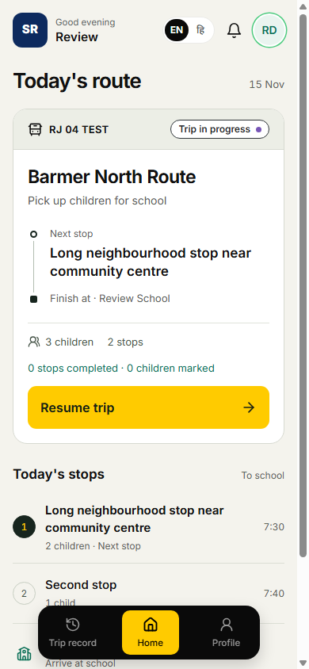
driver-home-hi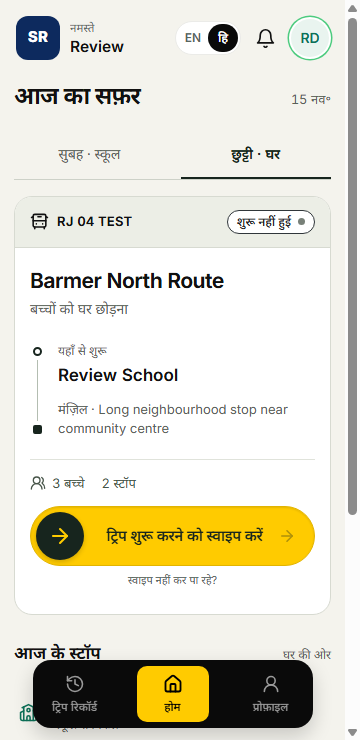
driver-history-other-date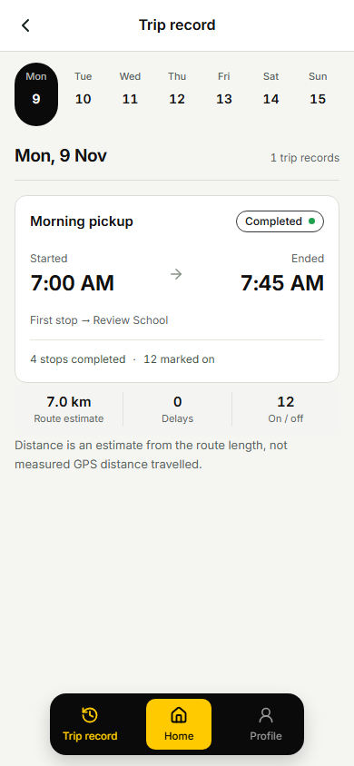
driver-salary parent-bus-overview-parent
parent-bus-overview-parent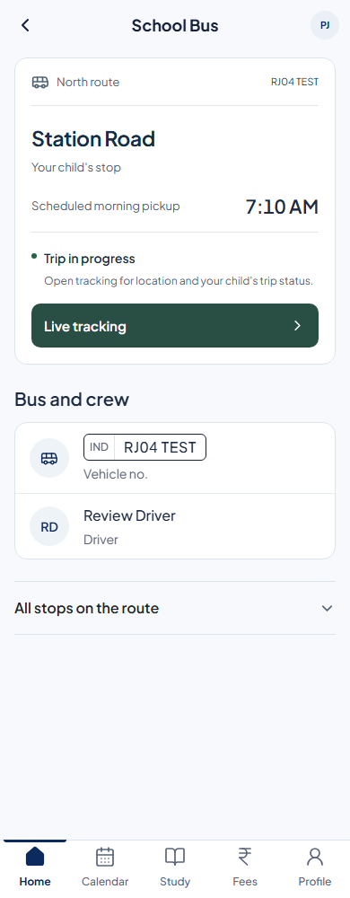
parent-tracking-live-parent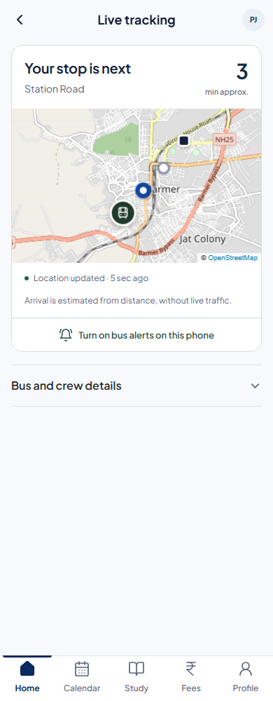
parent-tracking-stale-parent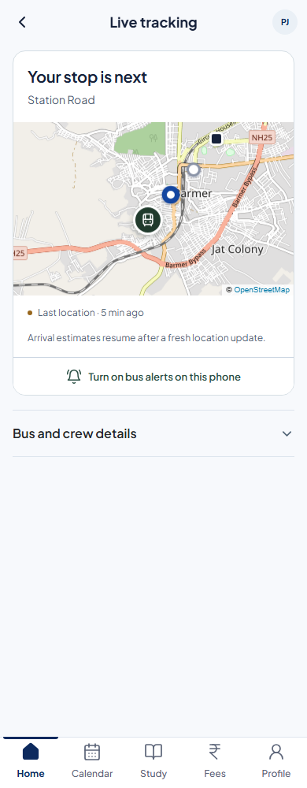
parent-tracking-boarded-parent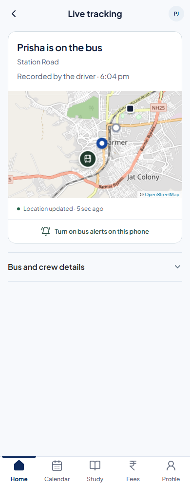
parent-tracking-delay-parent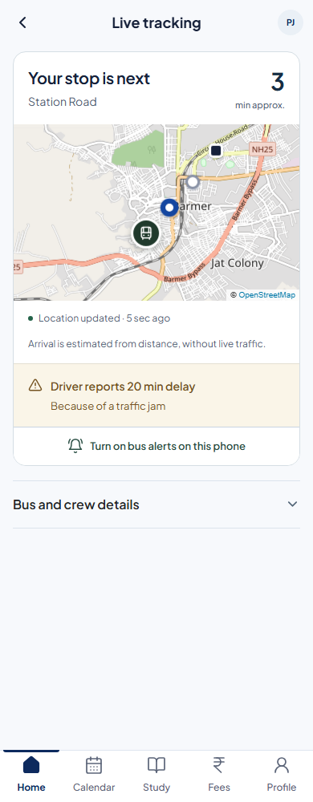
parent-tracking-unavailable-parent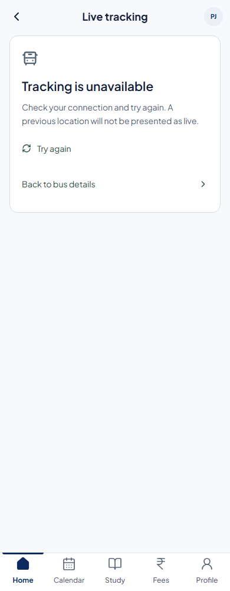
fleet-compact-staff-erp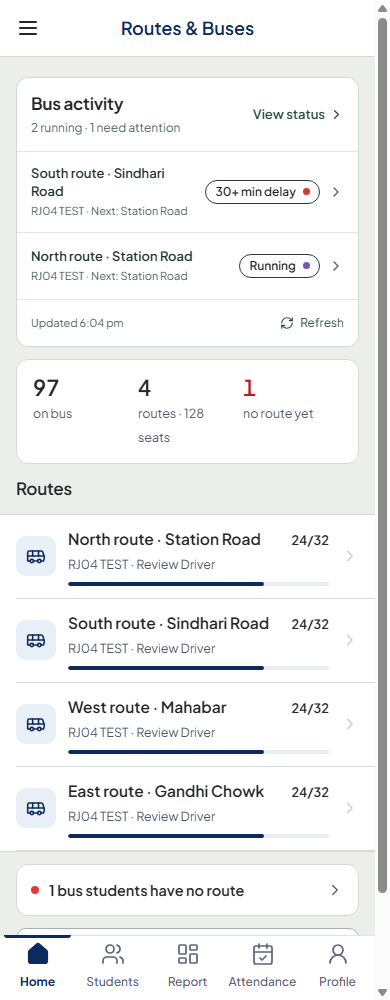
fleet-upper-detail-staff-erp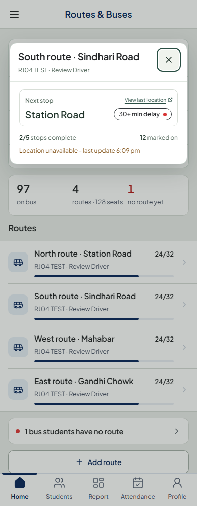
fleet-all-status-staff-erp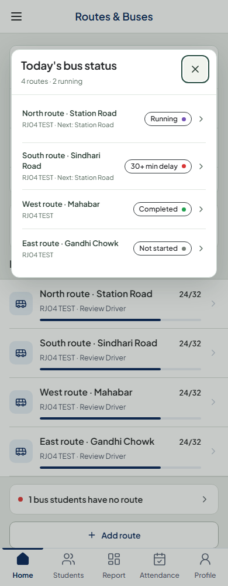
fleet-compact-web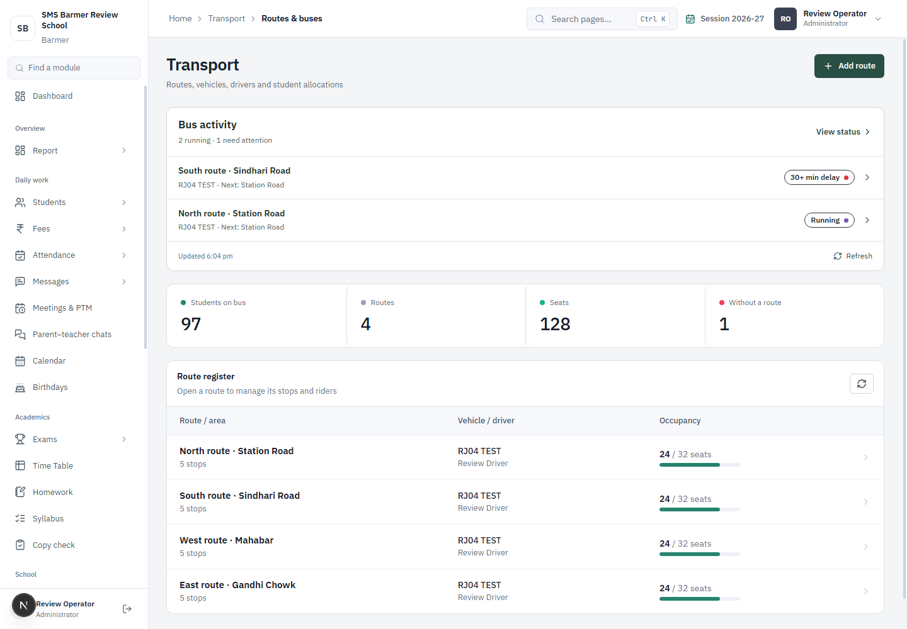
fleet-upper-detail-web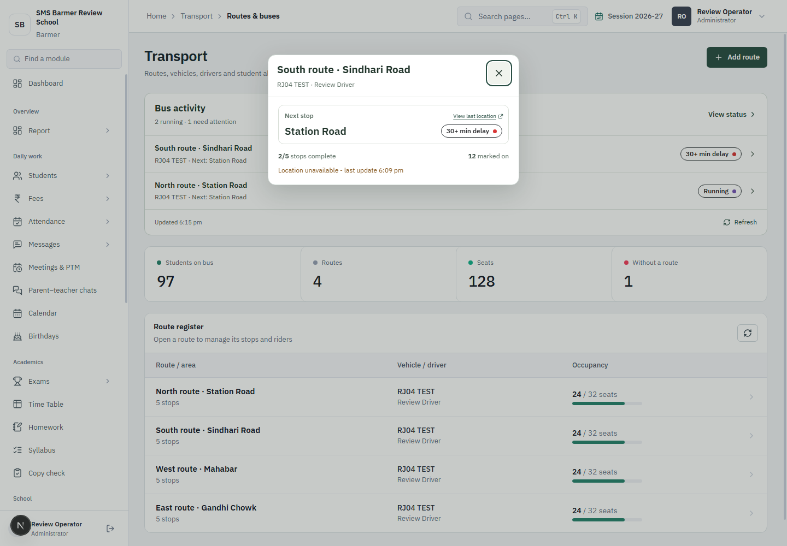
parent-overview-360-parent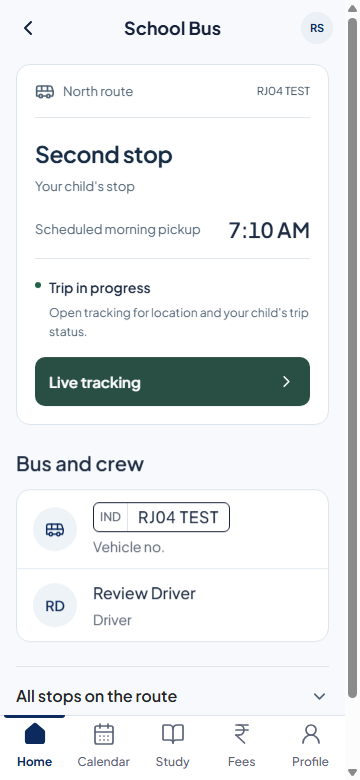
parent-tracking-360-parent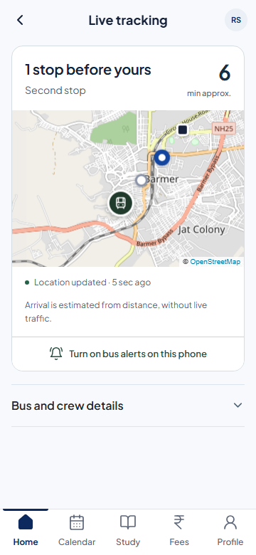
Stops expanded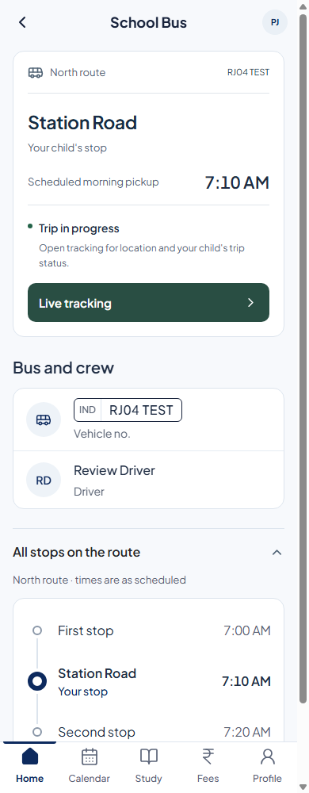
Crew expanded inside tracking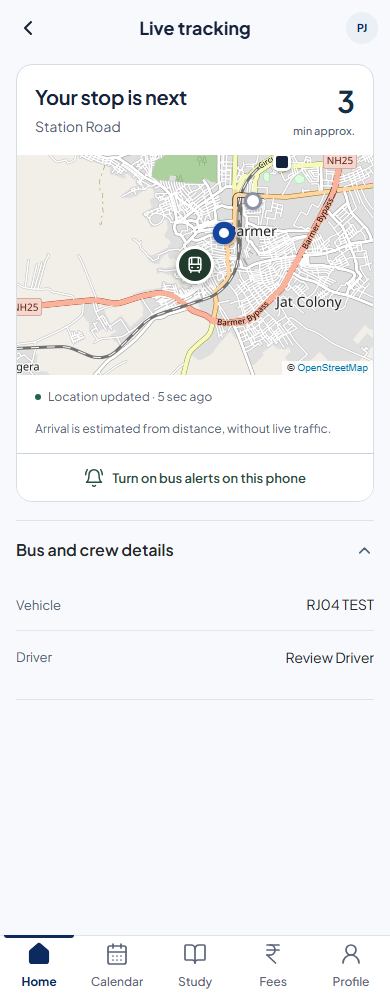
Shared neutral status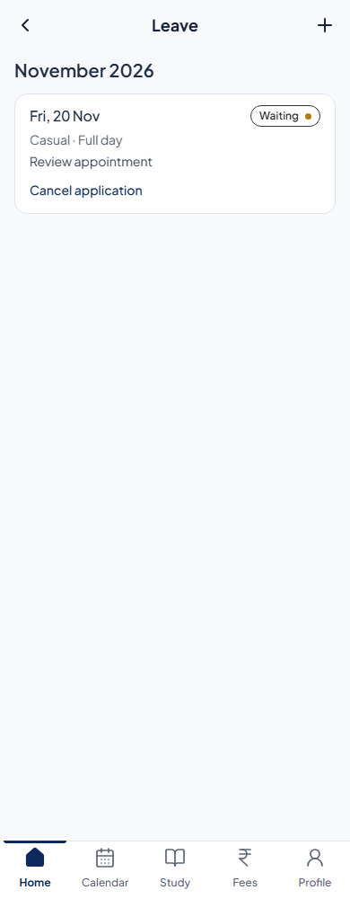
Driver bus marker and slide action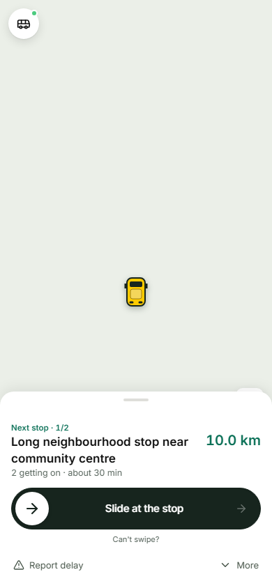